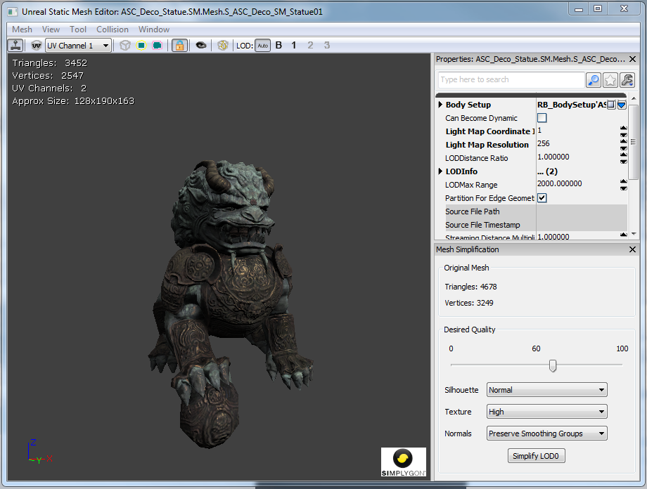
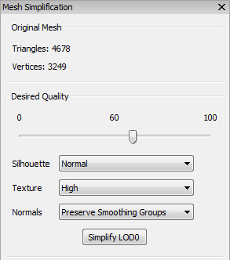
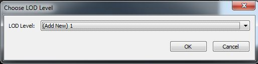
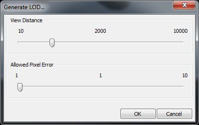
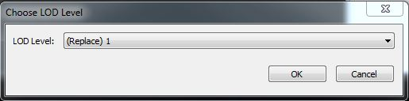
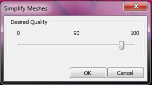

Mesh Simplification Tool
How It Works
The Mesh Simplification Tool lets you create a lower-resolution version of the original mesh. The mesh updates in-place so you can see the results instantly in the editor's viewports as you tweak the quality level of the mesh. The original mesh data is preserved, allowing you to tweak the mesh to your desired level of quality without losing the original source mesh.
The simplified mesh will consume less memory and can result in an increase in runtime performance.
Additionally, the tool can be used to automatically create level-of-detail (LOD) models for the mesh. These LOD models will be swapped in at a distance where the lack of detail is less noticeable. As these LOD models have less vertices and may require fewer bones they can result in a significant increase in rendering performance.
Note: Currently, only static meshes and skeletal meshes are supported. Fractured static meshes may be supported in the future.
See the SkeletalMeshSimplificationTool page for information on simplifying skeletal meshes.
Summoning the Tool Window
You can access the tool by opening the Static Mesh Editor. If you do not see the Mesh Simplification window, enable it from the Window menu. You can also right-click on any static mesh actor in your level and choose Simplify Mesh....

The Mesh Simplification tool is built into the Static Mesh Editor window as a freely dockable tool window.
Simplifying a Mesh
First select the LOD you wish to simplify from the LOD menu or toolbar:
Select your desired simplification settings and click the Simplify LOD button. The mesh will be immediately updated in both the Static Mesh Editor and other editor viewports.

Quality. Unlike past tools you are specifying a quality measure rather than a specific triangle count. The editor uses the desired quality to compute an error metric for the mesh. This error metric prevents the tool from simplifying a mesh such that the surface of the new mesh deviates too much from the surface of the source mesh. The advantage to this approach is that the tool can intelligently optimize the mesh within some deviation of the source mesh without stopping at an arbitrary triangle limit.
Silhouette. You can select how important the silhouette of the mesh is. You can choose from Normal, High, and Highest. Choosing a higher setting will cause the simplification to better preserve the geometric shape of the mesh but will result in a higher triangle count.
Texture. You can select how important texture density is. You can choose from Normal, High, and Highest. Choosing a higher setting will cause the simplification to avoid texture stretching artifacts but will result in a higher triangle count.
Normals. You can select one of four options for generating normals for the simplified mesh:
- Preserve Smoothing Groups: Try to preserve the original mesh's smoothing groups.
- Recompute Normals: Allow Simplygon to recompute normals for the simplified mesh.
- Recompute Normals (Smooth): Allow Simplygon to recompute normals for the simplified mesh, preferring smooth edges.
- Recompute Normals (Hard): Allow Simplygon to recompute normals for the simplified mesh, preferring hard edges.
The triangle and vertex counts will update in the upper-left corner of the Static Mesh Editor viewport when you simplify the mesh. The triangle and vertex counts of the source mesh are displayed in the Mesh Simplification window so that you may compare them to the simplified mesh.
You may continue adjusting the quality settings and simplifying the mesh until you arrive at a result you are happy with.
Generating an LOD
The mesh simplification tool can also generate an LOD for you. In the Static Mesh Editor select Generate LOD from the Mesh menu.
First you will be asked the LOD level you wish to generate:

Next you will be asked to select the constraints for generating the LOD:

Select the distance at which you wish to swap in this LOD, then select how many pixels the LOD is allowed to deviate from the source mesh. Finally, click OK to generate the LOD.
The editor will compute the quality metric for you when generating an LOD. The allowed pixel error tells the editor how many pixels you're comfortable with the mesh popping at a given distance. As an example, if you set the distance to 2000 and the allowed pixel error at 1, then the generated LOD will not deviate by more than 1 pixel from the source mesh when viewed from 2000 units away. This computed metric is an approximation. It makes some assumptions about the size of the backbuffer (1280x720 is assumed) and the field of view (90 degrees is assumed). This approximation is meant as a starting point from which you can fine tune the quality of the generated LOD.
After generating an LOD you will probably want to tweak its quality. Simply follow the instructions for simplifying a mesh and make sure you select the LOD that you generated.
If you would like to regenerate the LOD based on distance and pixel error, you may do so by selecting Generate LOD from the Mesh menu and opting to replace the LOD:

Simplifying Multiple Meshes
You may simplify meshes for all actors selected in the editor. This can be useful if you'd like to perform an optimization pass across a number of static meshes, for example those that are always seen from a distance. Simply select a group of static mesh actors in the editor and choose Simplify Meshes for All Selected Actors from the context menu.

Select a quality level and click OK. All selected static meshes will be simplified. You may wish to tweak the quality level of individual meshes once the batch process has finished.
WARNING: The mesh asset itself is simplified. The change will affect all instances including any that may be closer to the camera. It will also affect instances in other maps.
Simplygon®
Simplygon is used to automatically generate game-ready Level of Detail models (LODs) for a specific pixel resolution by removing as much information as possible without degrading LOD quality for a certain onscreen size. Simplygon uses a proprietary mesh reduction method that retains geometrical LOD integrity and visual quality of LOD switching, producing AutoLODs that can directly be used inside triple-A games.
Unreal Engine 3 leverages Simplygon to provide high-quality mesh reduction without having to leave the Unreal Editor. Developers can quickly simplify meshes, generate LODs, and immediately see the results in their maps.
Important!
You are viewing documentation for the Unreal Development Kit (UDK).
If you are looking for the Unreal Engine 4 documentation, please visit the Unreal Engine 4 Documentation site.